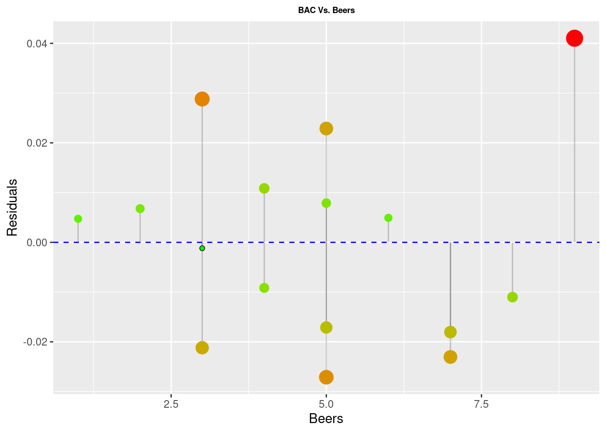

27 Helpful R codes
27.1 Residual Plots in ggplot2
# residual size plot
library(ggplot2)
bac <- read.csv("https://raw.githubusercontent.com/deepbas/statdatasets/main/BAC.csv")
fit <- lm(BAC ~ Beers, data = bac) # fit the model
bac$predicted <- predict(fit) # Save the predicted values
bac$residuals <- residuals(fit) # Save the residual values
ggplot(bac, aes(x = Beers, y = BAC)) +
geom_smooth(method = "lm", se = FALSE, color = "lightgrey") + # regression line
geom_segment(aes(xend = Beers, yend = predicted), alpha = .2) + # draw line from point to line
geom_point(aes(color = abs(residuals), size = abs(residuals))) + # size of the points
scale_color_continuous(low = "green", high = "red") +
labs(title = "BAC Vs. Beers") +# color of the points mapped to residual size - green smaller, red larger
guides(color = FALSE, size = FALSE) + # Size legend removed
geom_point(aes(y = predicted), shape = 1, size = 2) +
scale_x_continuous(breaks=1:9)+
theme(axis.text=element_text(size=10),
axis.title=element_text(size=10,face="bold"),
plot.title = element_text(size = 10, face = "bold"))
ggplot(bac, aes(x = Beers, y = residuals)) +
geom_point() +
theme(legend.position = "none") +
geom_segment(aes(xend = Beers, yend = 0), alpha = .2) +
scale_color_continuous(low = "green", high = "red") +
geom_point(aes(color = abs(residuals), size = abs(residuals))) + # size of the points
geom_hline(yintercept = 0, col = "blue", size = 0.5, linetype = "dashed") +
labs(title = "BAC Vs. Beers",
x = "Beers",
y = "Residuals") +
theme(plot.title = element_text(hjust=0.5, size=7, face='bold')) 
27.2 Plotly codes
library(plotly)
cell_phone_data <- data.frame(
Type = c("Android", "iPhone", "Blackberry", "Non Smartphone", "No Cell Phone"),
Frequency = c(458, 437, 141, 924, 293)
)
data <- data.frame(
Gender = c("Female", "Male"),
In_a_relationship = c(32, 10),
Its_complicated = c(12, 7),
Single = c(63, 45)
)
plot_ly(cell_phone_data, labels = ~Type, values = ~Frequency, type = 'pie',
textposition = 'inside', hoverinfo = 'label+value+percent',
textinfo = 'label', insidetextfont = list(color = '#FFFFFF')) %>%
layout(title = 'Cell Phone Usage',
xaxis = list(showgrid = FALSE, zeroline = FALSE, showticklabels = FALSE),
yaxis = list(showgrid = FALSE, zeroline = FALSE, showticklabels = FALSE))